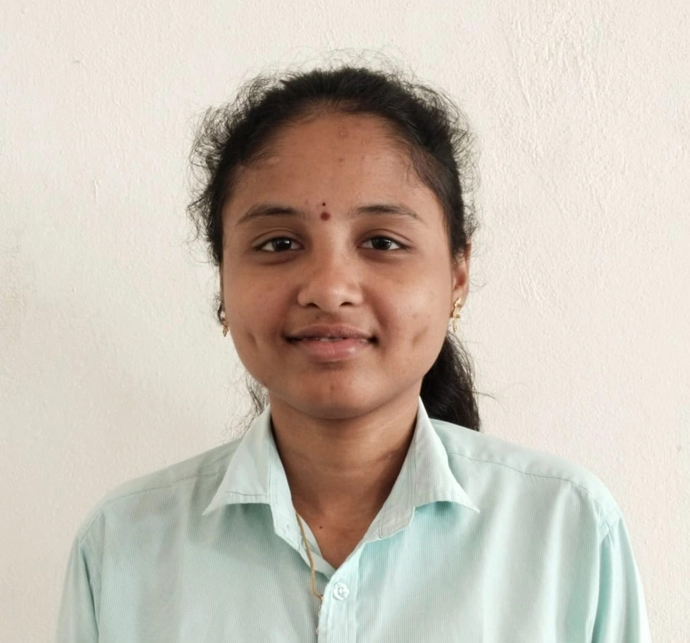
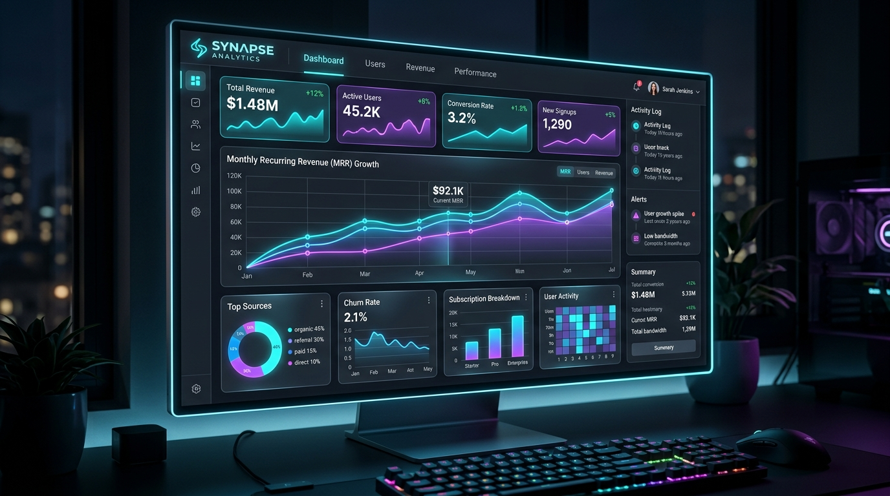
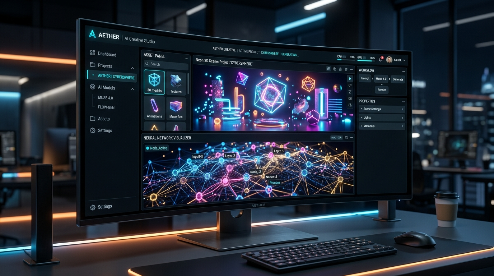

Hi, I'm Tejaswini! 👋
|
Motivated Computer Science Engineering student aspiring to build a career in Data Analytics with skills in Python, SQL, Power BI, Tableau, and Excel. Passionate about data visualization, business insights, and analytical problem-solving.

0
.47B.Tech CGPA
0
%Intermediate Score
0
+Industry Certifications
0
+BI & Analytics Projects
Education & Milestones
Consistent academic excellence paired with specialized training in data analysis and engineering.
Bachelor of Technology in Computer Science (CSE)
Vignan's Nirula Institute Of Technology And Science For Women • CGPA: 8.47 / 10.0
Core Studies: Database Management Systems (DBMS), SQL, Python Programming, Object-Oriented Programming with Java, Data Structures & Algorithms, Computer Networks, Operating Systems.
Senior Secondary Education (Class XII)
Narayana Junior College • 96.0%
Andhra Pradesh State Board of Intermediate Education with Mathematics, Physics, and Chemistry (MPC). Secured outstanding distinction with 96% aggregate.
Secondary School Certificate (Class X)
Oxford High School • Board of Secondary Education, AP
Strong academic foundation with highest honors in Mathematics and Science subjects, preparing the analytical grounding for computer science engineering.
Skills & Core Competencies
Bridging data queries, mathematical reasoning, and intuitive interactive visualization dashboards.
Tejaswini Kapu
Aspiring Data Analyst & BI Developer
I am passionate about turning complex raw data into actionable business intelligence. Experienced in developing interactive Power BI and Tableau dashboards, writing optimized SQL queries, statistical analysis, and transforming supply chain & sales data into visual narratives.
Technical Skills & Proficiency
Tools, languages, and analytics ecosystems I work with daily.
Internship & Work Experience
Real-world analytics pipelines, data cleaning, and KPI dashboard development.
Data Analytics & Business Intelligence Intern
Infosys Springboard Virtual Internship 7.0
Worked on the Supply Chain Visibility System with Optimization Analytics. Leveraged Power BI and Power Query to ingest, clean, and transform multi-source supply chain datasets, eliminating inconsistencies and preparing unified data models.
Data Dashboards & Academic Projects
Transforming raw enterprise and consumer datasets into interactive decision engines.

Power BI & SQLCustomer Segmentation & Behavior Analysis
Analyzed customer purchasing behavior and built interactive Power BI dashboards to identify key customer segments and strategic business insights.
Netflix Content & Trend Analytics
Built an interactive Tableau dashboard to analyze streaming genres, ratings, geographical origin, and historical release velocity.

Business IntelligenceSuperstore Sales & Profitability Dashboard
Analyzed enterprise sales, profitability metrics, customer cohorts, and regional shipping performance to identify revenue growth levers.
TCS iON NQT & Problem Solving
Validated quantitative aptitude, logical reasoning, and programming competency.
TCS iON NQT (National Qualifier Test)
Information Technology Qualifier • Aug 2026
Analytical Focus & Tools Proficiency
Multi-discipline data engineering & analytics capabilities
Interactive CLI Terminal
Type commands or click quick action chips to explore Tejaswini's profile like a pro!
Type help to see available commands or click the chips above.
Certifications & Accolades
Industry credentials across Data Analytics, Python, Java, Power BI, and Cloud Systems.
TCS iON NQT – IT Qualifier
Scored 75.55% in Advanced Reasoning and 60.34% in Python Programming. Overall score: 61.92%.
NPTEL Certifications (Python & Java)
Earned NPTEL certifications in "The Joy of Computing using Python" and "Programming in Java" with distinction.
TechA & Infosys Power BI Certification
TechA Data Analytics using Power BI Foundation and Power BI for Business Professionals via Infosys Springboard.
Cisco Academy – Python Essentials
Certified in Python core language fundamentals, data structures, algorithms, and modular software design.
Deloitte Data Analytics Simulation
Completed hands-on data analytics job simulation tackling real-world business challenges and visual reporting.
Excel for Business Professionals
Advanced data preparation, pivot tables, lookup functions, and analytical modeling via Infosys Springboard.
Let's Discuss Opportunities!
Reach out for Data Analytics internships, entry-level BI roles, project collaborations, or professional networking.
Get in touch directly
I am actively checking emails and LinkedIn messages for exciting data analyst roles, internships, and data project collaborations.
Email Me
tejaswinikapu7@gmail.com
LinkedIn Profile
linkedin.com/in/kapu-tejaswini-48b4a0299
Location
Andhra Pradesh, India
Response Time
Usually within 2 to 4 hours
Committed to high-quality analysis, continuous learning, and driving data-driven business impact.